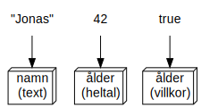
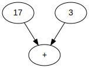
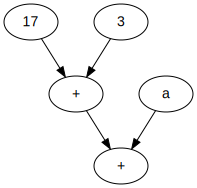
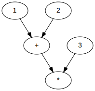
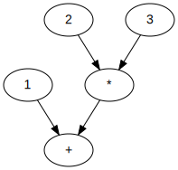

Syntax är formella regler för hur man skriver giltig kod.
Följande kod:
string namn = "Jonas";
int ålder = 42;
bool körkort = true;
skapar tre variabler och lagrar värden i dem, som illustrerat i figuren nedan.

Syntax för en identifierare:
__ eller en bokstav, inte en siffraGiltiga identifierare:
length, width, color, myName, object1, _variableInte giltiga identifierare:
1object, my name, object:1| Keyword | Möjliga värden | Data | .NET-typ |
|---|---|---|---|
sbyte |
[-128, 127] | 8 bitar | System.SByte |
byte |
[0, 255] | 8 bitar | System.Byte |
short |
[-32 768, 32 767] | 16 bitar | System.Int16 |
ushort |
[0, 65'535] | 16 bitar | System.UInt16 |
int |
[-2 147 483 648, 2 147 483 647] | 32 bitar | System.Int32 |
uint |
[0, 4 294 967 295] | 32 bitar | System.UInt32 |
long |
[-9 223 372 036 854 775 808, 9 223 372 036 854 775 807] |
64 bitar | System.Int64 |
ulong |
[0, 18 446 744 073 709 551 615] | 64 bitar | System.UInt64 |
| Keyword | Möjliga värden | Data | .NET-typ |
|---|---|---|---|
float |
±1.5 x 10−45 to ±3.4 x 1038 | 32 bitar | System.Single |
double |
±5.0 × 10−324 to ±1.7 × 10308 | 64 bitar | System.Double |
decimal |
±1.0 x 10-28 to ±7.9228 x 1028 | 128 bitar | System.Decimal |
OBS: Vi kommer inte gå in på detaljer för typen decimal i denna kurs
<typ> <identifierare>;byte shoeSize; // 1 byte allokerad
uint pixels; // 4 bytes allokerad
long credit; // 8 bytes allokerad
sbyte shoeSize; // FEL! redan definierad i kodblocket
int ulong; // FEL! ulong är ett keyword
int @ulong; // 4 bytes allokerade
// och efterföljande text på samma kodrad en kommentar i dokumenterande syfte och och påverkar inte programmets beteende.
<variabel> = <uttryck>;int a;
int b;
a = 1 + 2;
b = a * 3;
int a = 1 + 2;
int b = a * 3;
varvar a = 1 + 2; // a har typen int
var b = 1.0 + 2.0; // b har typen double
15, 123.456, -189length, x, shoeSizevar a = 123; // int
var b = 123L; // long
var c = 123UL; // unsigned long
var d = 0x1AC3; // int på hexdecimal form
var e = 0b10101010; // int på binär form
var f = 0b_1010_1010; // samma betydelse som föregående rad
Flyttalslitteraler utmärker sig genom att de alltid innehåller en punkt.
var a = 123.0; // litteral av typen double
var b = 123.0f; // litteral av typen float
var c = 1.23e2; // litteral av typen double, scientific notation
var d = 1.23e2f; // litteral av typen float, scientific notation
var d = 1.23e-2f; // litteral av typen float, scientific notation
+, - och *I koden nedan:
int a = 17 + 3
används additionsoperatorn för att skapa ett uttryck, illustrerat av figuren nedan.

I koden nedan:
int a = 10
int b = 17 + 3 + a
använder additionsoperatorn två gånger för att skapa två uttryck, varav ett är operand till det andra, som illustrerat av figuren nedan.

Följande operatorer finns för alla heltals- och flyttalstyper.
| Operator | Syntax | Resultat |
|---|---|---|
| Addition | a + b | Summan av a och b |
| Subtraktion | a - b | Differenansen mellan a och b |
| Multiplikation | a * b | Produkten av a och b |
| Division | a / b | Kvoten av a och b |
| Rest | a % b | Resten vid heltalsdivision a / b |
| Negativ | -a | Minus a |
OBS: a och b måste ha samma typ för att beräkningen skall kunna utföras och resultatet har samma typ som operanderna.
int a = 3;
int b = 2;
double c = 3.0;
double d = 2.0;
var e = a + b; // int med värdet 5
var f = c + d; // double med värdet 5.0
var g = a / b; // int med värde 1 (heltalsdivision)
var h = a % b; // int med värde 1
var i = c / d; // double med värdet 1.5
var j = -c; // double med värdet -3.0
Följande operatorer finns endast för heltalstyper.
| Namn | Syntax | Resultat/sidoeffekt |
|---|---|---|
| Prefix inkrement | ++a | Öka värdet på a med 1 och ge sedan värdet på a som resultat |
| Postfix inkrement | a++ | Ge värdet på a som resultat och öka sedan värdet på a med 1 |
| Prefix dekrement | --a | Minska värdet på a med 1 och ge sedan värdet på a som resultat |
| Postfix dekrement | a-- | Ge värdet på a som resultat och minska sedan värdet på a med 1 |
int a = 10;
int b = ++a; // b = 11, a = 11
int c = a++; // c = 11, a = 12
int d = --a; // d = 11, a = 11
int e = a--; // e = 11, a = 10
Det är vanligt med tilldelningar på formen: x = x <operator> y;
Operatorerna för sammansatt tilldelning förenklar syntaxen
| Operator | Syntax | Betydelse |
|---|---|---|
| Sammansatt addition | a += b | a = a + b |
| Sammansatt subtraktions | a -= b | a = a - b |
| Sammansatt multiplikation | a *= b | a = a * b |
| Sammansatt division | a /= b | a = a / b |
double a = 10.0;
a /= 2.0; // a = 5
a += 10.0; // a = 15
a -= 3.0; // a = 12
a *= 4.0; // a = 48
Har uttrycket tilldelat x i koden nedan:
int x = 1 + 2 * 3;
strukturen enligt bilden till höger eller vänster nedan?


1 + 2 * 3 har strukturen enligt figuren nedan.Med parenterser har uttrycket tilldelat x i koden nedan:
int x = (1 + 2) * 3;
nu strukturen enligt figuren nedan.
Konverteringsoperatorn konverterar ett värde av en typ till en annan typ
Konverteringsoperatorn har följande syntax:
(<typ>) <uttryck>
där <typ> är typen som uttrycket skall konverteras till.
En lista över alla möjliga typkonverteringar finns här.
int a = 123;
byte b = (byte)a; // konvertering till byte
double c = 123.456;
float d = (float)d; // konvertering till float
int e = (int)c; // konvertering till int, resultat: 123
float och int implicit konverteras till doublevar a = 1 + 2.0; // 1 konverteras implicit till double
double b = 123.456f; // implicit konvertering från float till double
float c = 123.456; // FEL! double kan inte implicit konvertersa till float
char'')
'a', 'Ä', '[', '⻑', 'β',char a = 'a';
uint b = a; // b = 0b_00000000_01100001, UTF-16-kod för tecknet 'a'
char c = '😊'; // FEL! Inte i första Unicode-planet, kräver surrugatpar
string'')
"Strängar kan innehålla emojis 😎"Length-egenskapenstring text = "Hej!";
int length = text.Length; // length = 4
text = "🦊🐻🐼";
length = text.Length; // length = 6
Även strängar har operatorer.
| Operator | Syntax | Resultat |
|---|---|---|
| Indexering | s [ i ] | Tecknet i strängen s med index i |
| Konkatenering | s1 + s2 | Ny sträng bestående av s1 följt av s2 |
string text1 = "Hej";
string text2 = " då";
string text3 = text1 + text2; // text3 = "Hej då"
text3 += '!'; // text3 = "Hej då!"
char a = text1[0]; // a = 'H'
char b = text1[1]; // b = 'e'
char c = text1[2]; // c = 'j'
char e = text1[3]; // FEL! Strängen har inget element med index 3
LF, CR och BEL", ' och \Tabellen nedan beskriver de viktigaste escapesekvenserna.
| Escape- sekvens | Tecken | Betydelse | |
|---|---|---|---|
| \n | LF | Ny rad | |
| \r | CR | Gå till början av aktuell rad | |
| \t | HT | Horisontell tabulering | |
| \" | " | ||
| \' | ' | ||
| \\ | \ |
En komplett förteckning av escapesekvenser finns här.
Koden nedan:
Console.WriteLine("Hej\tdå!");
Console.WriteLine("Text på\nny rad.");
Console.WriteLine("Citat: \"text\"");
Console.WriteLine("C:\\Projekt\\hello-world\\Program.cs");
ger utskriften:
Hej då!
Text på
ny rad.
Citat: "text"
C:\Projekt\hello-world\Program.cs
stringKoden nedan:
double pris = 49.95;
double moms = 0.25; // 25%
Console.WriteLine(
"Momsen på " + pris + " kr är " +
(moms * pris) + " kr.");
ger utskriften:
Momsen på 49.95 kr är 12.4875 kr.
${}) utvärderas och konverteras till textKoden nedan:
double pris = 49.95;
double moms = 0.25; // 25%
Console.WriteLine($"Momsen på {pris} kr är {moms * pris} kr.");
ger också uttskriften:
Momsen på 49.95 kr är 12.4875 kr.
{flyttal:0.##} i stränginterpolation ger två decimalers noggranhet{flyttal:0.###} ger tre decimalers noggranhet osvKoden nedan:
double pris = 49.95;
double moms = 0.25; // 25%
Console.WriteLine($"Momsen på {pris:0.##} kr är {moms * pris:0.##} kr.");
ger uttskriften:
Momsen på 49.95 kr är 12.49 kr.
En textrad kan läsas in från användaren av en konsolapplikation med:
Console.ReadLine()
T.ex. en körning av koden nedan:
Console.WriteLine("Skriv text.);
string text = Console.ReadLine();
Console.WriteLine($"Du skrev:\n{text});
se ut ut så här:
Skriv in text.
Hej på dig!
Du skrev:
Hej på dig!
Strängar kan konverteras till tal enligt tabellen nedan.
| Syntax | Resultat |
|---|---|
SByte.Parse(s) | strängen s tolkad som sbyte |
Byte.Parse(s) | strängen s tolkad som byte |
Int16.Parse(s) | strängen s tolkad som short |
UInt16.Parse(s) | strängen s tolkad som ushort |
Int32.Parse(s) | strängen s tolkad som int |
UInt32.Parse(s) | strängen s tolkad som uint |
Single.Parse(s) | strängen s tolkad som float |
Double.Parse(s) | strängen s tolkad som double |
double a = Double.Parse("123.456");
sbyte b = SByte.Parse("-17");